Every map reaches Y115 with a summit at least 32×32 blocks, a substantial connected mountain region, one lowland lake and an optional mountain tarn. Terrain and trees generate naturally throughout the world. Players choose and clear their own settlement location.
1,000 seeds passed. Connected mountain area: 12.5–26.0%. 705 seeds include a tarn. 474 lakes meet an edge; 526 are inland.
Macro geography only, before edge detail, terrain materials, flora or navigation. The normal game uses this layout with protected edge detailing. Relief diagrams exaggerate height. Click an image to inspect it.
Open the 16-seed overview · Validation report
Open the three-seed baseline comparison
Normal initial views, natural terrain and wide mountain views for two seeds. Close-ups inspect cliffs and water banks. Inspection views disable distance fog; wide mountains also use extended zoom.
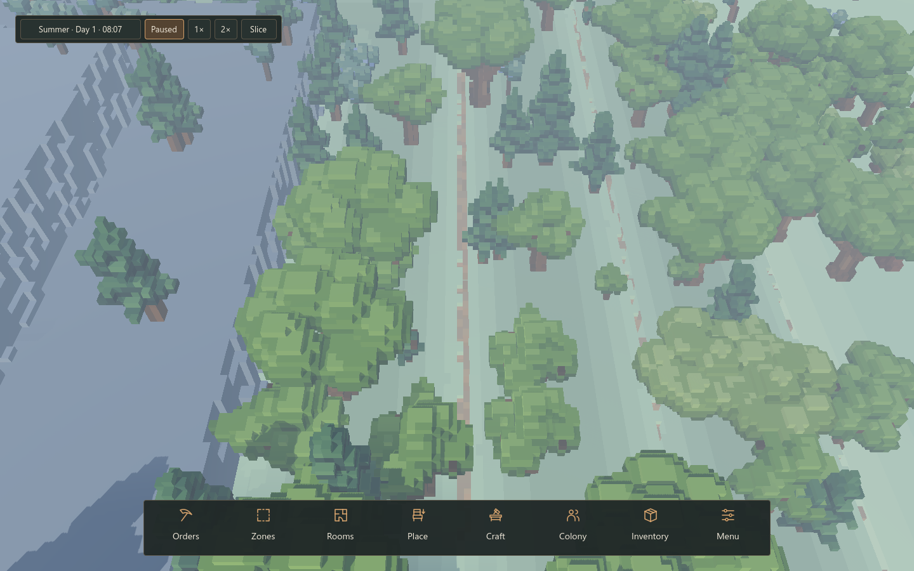
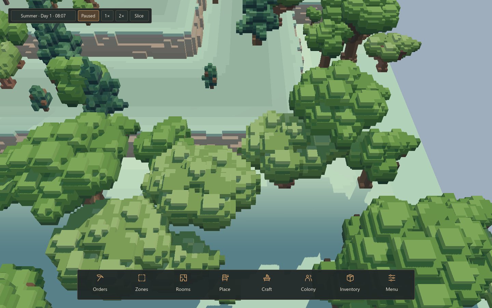
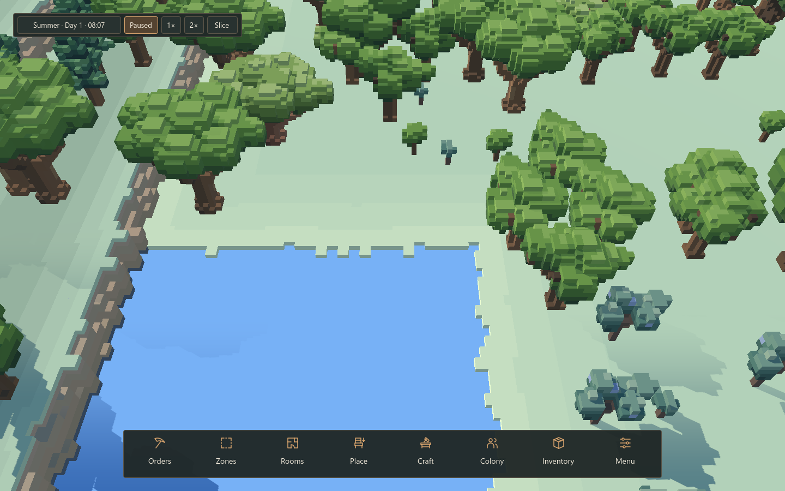
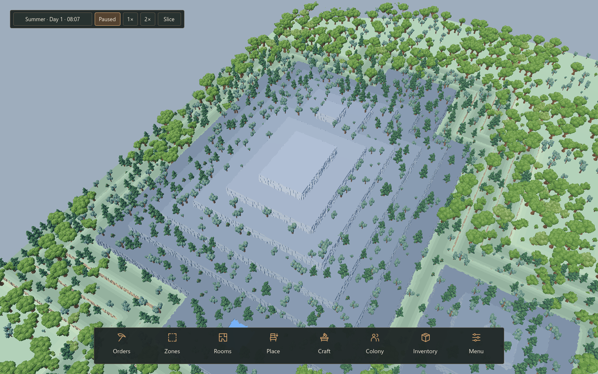
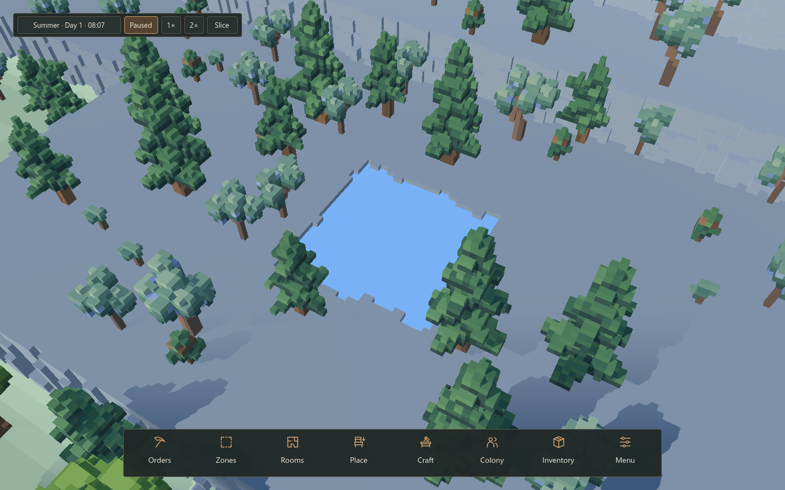
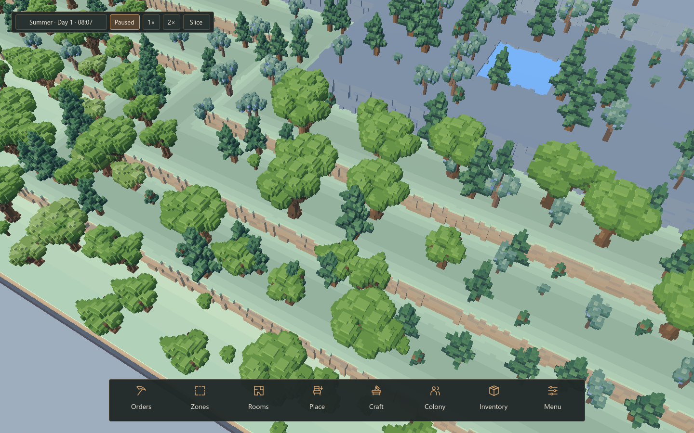
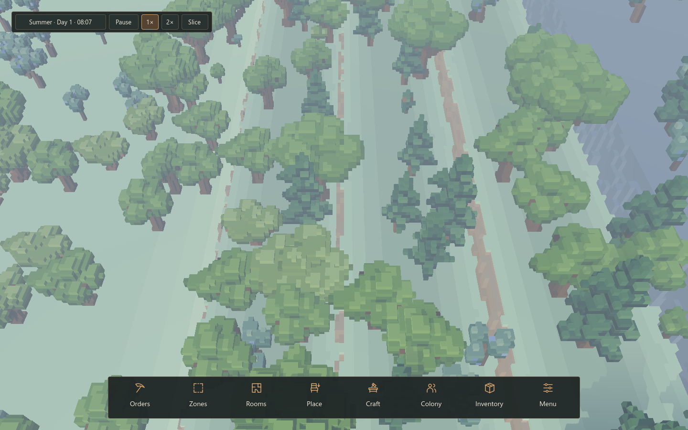
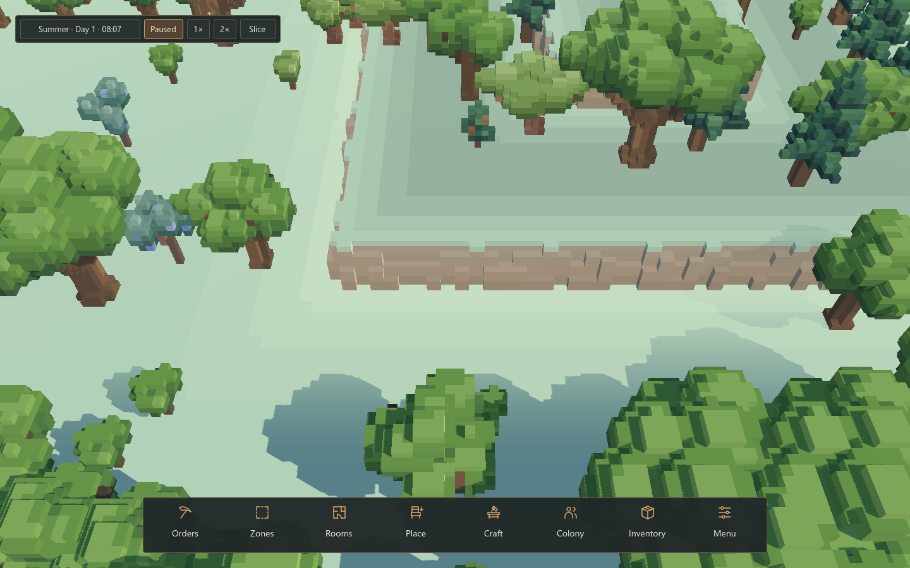
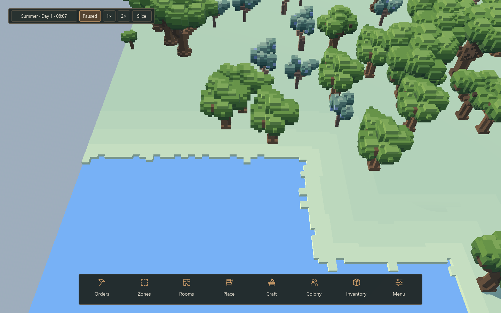
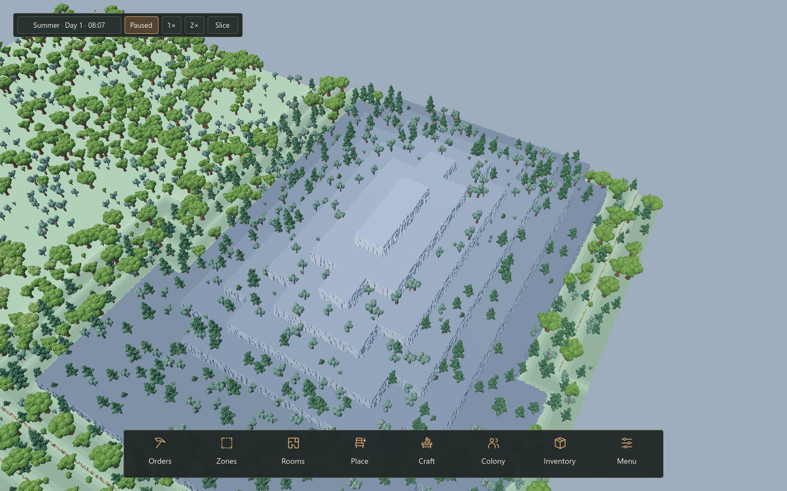
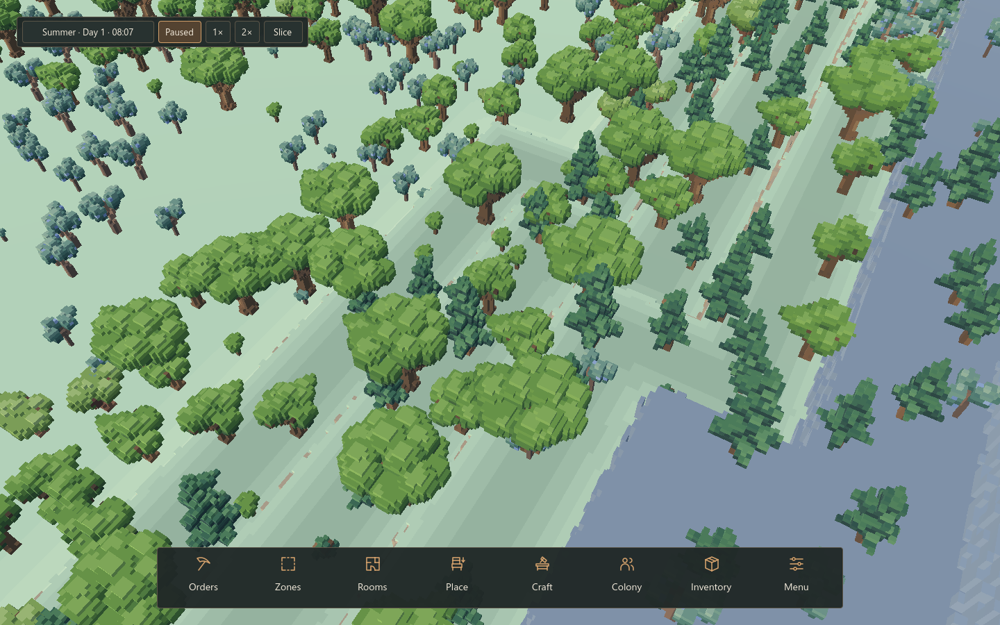